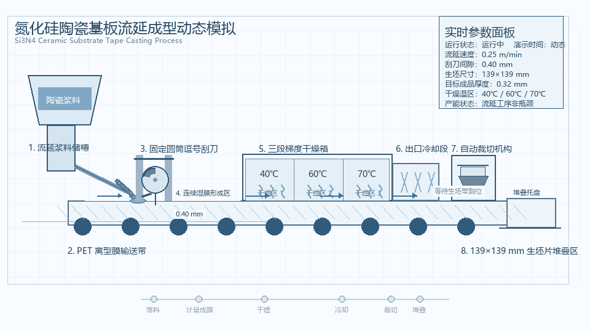

对应工艺环节：球磨混料
四罐位行星式球磨机动态展示
该动态图展示了四罐位行星式球磨机的转盘公转、球磨罐自转以及研磨球冲击剪切作用。球磨混料是氮化硅陶瓷基板制备前端的重要工序，其作用是将 Si3N4 粉体、烧结助剂、分散剂和溶剂充分混合，并通过研磨细化团聚颗粒，改善浆料均匀性和后续流延成型稳定性。通过动态图可以直观理解公转与自转叠加形成的高能研磨轨迹，为获得粒径分布均匀、分散状态良好的陶瓷浆料提供基础。
毕业设计动态补充材料
关键设备与工艺环节动态图展示
本页面用于展示毕业设计中关键设备与工艺环节的动态图，辅助理解氮化硅陶瓷基板生产线中流延成型和气压烧结等核心工序。
Overview
本页面用于展示毕业设计中关键设备与工艺环节的动态图，辅助理解氮化硅陶瓷基板生产线中球磨混料、流延成型和气压烧结等核心工序。动态图可作为论文纸质版的扫码补充材料，也可用于答辩展示。
对应工艺环节：球磨混料
该动态图展示了四罐位行星式球磨机的转盘公转、球磨罐自转以及研磨球冲击剪切作用。球磨混料是氮化硅陶瓷基板制备前端的重要工序，其作用是将 Si3N4 粉体、烧结助剂、分散剂和溶剂充分混合，并通过研磨细化团聚颗粒，改善浆料均匀性和后续流延成型稳定性。通过动态图可以直观理解公转与自转叠加形成的高能研磨轨迹，为获得粒径分布均匀、分散状态良好的陶瓷浆料提供基础。

对应论文图号：图4-1
该动态图展示了精密流延设备的基本结构与运行过程。流延成型是氮化硅陶瓷基板制备中的关键工序，其作用是将高固含量陶瓷浆料均匀铺展在载膜上，形成厚度稳定、表面平整的连续生坯带。通过动态图可以直观理解浆料供给、刮刀控厚、载膜输送和干燥成膜之间的协同关系，为后续排胶和烧结工序提供尺寸一致性良好的生坯基础。

对应论文图号：图5-2
该动态图展示了立式钟罩气压烧结炉的设备形态与工作过程。气压烧结是提升 Si3N4 陶瓷基板致密度、力学性能和热导率的核心环节。烧结过程中，炉体在高温和氮气压力条件下抑制 Si3N4 分解，并促进 β-Si3N4 晶粒生长和晶界相优化。通过动态图可以更直观地理解炉体升降、密封加压、温度控制和高压氮气保护等关键过程。